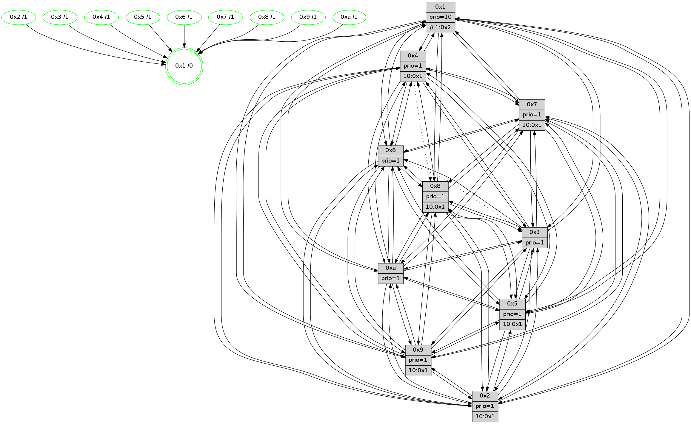

>> << IDX [start] -100 -25 -5 +0 +5 +25 +100 [1205.48084116]
 Previous packets
1200.003905 beacon05(faad) #0 coord=01,02,03,04,05,06,07,0a,09,08 cycle=688.0ms assoc 64 1e 70
1200.013905 beacon06(faad) #0 coord=01,02,03,04,05,06,07,0a,09,08 cycle=688.0ms assoc 64 90 a7
1200.023906 beacon07(faad) #0 coord=01,02,03,04,05,06,07,0a,09,08 cycle=688.0ms assoc 64 ea ea
1200.033912 beacon0a(faad) #0 coord=01,02,03,04,05,06,07,0a,09,08 cycle=688.0ms assoc 64 9b e1
1200.043911 beacon09(faad) #0 coord=01,02,03,04,05,06,07,0a,09,08 cycle=688.0ms assoc 64 15 36
1200.053914 beacon08(faad) #0 coord=01,02,03,04,05,06,07,0a,09,08 cycle=688.0ms assoc 64 6f 7b
1200.065155 [Hello(1): seq=675 sym=4,2,9,5,10,3,8,6,7 sysInfo=coloring-mode-on,ColoringModeRequestCalled stat=4:3,4,1,0/2:4,8,7,2/9:5,7,1,0/5:12,8,0,7/10:4,3,12,6/3:10,14,1,7/8:10,11,3,3/6:4,12,9,14/7:11,13,4,14]
1200.068951 [Hello(5): seq=766 sym=7,6,4,3,1,9,8,10,2 sysInfo=hasWarning stat=7:2,0,12,13/6:1,8,10,2/4:2,7,4,13/3:6,2,3,14/1:7,7,4,0/9:6,3,3,9/8:0,1,1,2/10:11,13,1,8/2:1,6,5,6]
1200.071510 [Hello(3): seq=766 sym=1,7,2,4,8,9,10,5 sysInfo=hasWarning stat=1:7,7,1,0/7:14,9,1,12/2:8,0,4,0/4:3,5,4,11/8:9,5,15,4/9:3,9,7,14/10:0,10,13,4/5:7,0,12,15]
1200.073893 [Hello(6): seq=766 sym=2,5,4,7,9,8,10,1 asym=3 sysInfo=hasWarning stat=2:0,1,0,0/5:6,2,3,1/4:6,14,15,5/7:12,8,10,12/9:6,0,8,8/8:13,13,4,5/10:6,10,5,12/1:13,6,4,1/3:3,2,0,12]
1200.076425 [STC(10)->1 #0.189 tree-change,inconsistent-stability,stable,to-color d=1]
1200.077854 [STC(3)->1 #0.189 tree-change,inconsistent-stability,stable,to-color d=1]
1200.079322 [TreeStatus(10)-.->1 #0.189 tree-change,inconsistent-stability,stable child=1]
1200.081514 [STC(6)->1 #0.189 tree-change,inconsistent-stability,stable,to-color d=1]
1200.084167 [STC(8)->1 #0.189 tree-change,inconsistent-stability,stable,to-color d=1]
1200.085462 [Color(10) seq=355 @0:0 prio=1]
1200.087244 [STC(9)->1 #0.189 tree-change,inconsistent-stability,stable,to-color d=1]
1200.088491 [Hello(2): seq=762 sym=4,5,7,6,3,9,8,10,1 sysInfo=hasWarning stat=4:5,10,10,11/5:8,11,14,0/7:14,6,11,14/6:13,9,13,11/3:7,6,13,9/9:8,11,3,7/8:6,7,10,11/10:8,13,2,10/1:13,9,15,0]
1200.092462 [STC(5)->1 #0.189 tree-change,inconsistent-stability,to-color d=1]
1200.097211 [STC(2)->1 #0.189 tree-change,inconsistent-stability,stable,to-color d=1]
1200.098597 [Color(6) seq=398 @0:0 prio=1]
1200.100428 [Color(2) seq=342 @0:0 prio=1 >10.@1,1.@3,1.@4,1.@5]
1200.102439 [Color(3) seq=395 @0:0 prio=1]
----------------------------------------------------------------------
1200.752053 beacon01(faad) #0 coord=01,02,03,04,05,06,07,0a,09,08 cycle=688.0ms assoc
-- color-indic=1 64 46 ae
1200.762037 beacon02(faad) #0 coord=01,02,03,04,05,06,07,0a,09,08 cycle=688.0ms assoc 64 d5 9f
1200.772035 beacon03(faad) #0 coord=01,02,03,04,05,06,07,0a,09,08 cycle=688.0ms assoc 64 af d2
1200.782035 beacon04(faad) #0 coord=01,02,03,04,05,06,07,0a,09,08 cycle=688.0ms assoc 64 d8 38
1200.792036 beacon05(faad) #0 coord=01,02,03,04,05,06,07,0a,09,08 cycle=688.0ms assoc 64 a2 75
1200.802035 beacon06(faad) #0 coord=01,02,03,04,05,06,07,0a,09,08 cycle=688.0ms assoc 64 2c a2
1200.812035 beacon07(faad) #0 coord=01,02,03,04,05,06,07,0a,09,08 cycle=688.0ms assoc 64 56 ef
1200.822041 beacon0a(faad) #0 coord=01,02,03,04,05,06,07,0a,09,08 cycle=688.0ms assoc 64 27 e4
1200.832041 beacon09(faad) #0 coord=01,02,03,04,05,06,07,0a,09,08 cycle=688.0ms assoc 64 a9 33
1200.842043 beacon08(faad) #0 coord=01,02,03,04,05,06,07,0a,09,08 cycle=688.0ms assoc 64 d3 7e
1200.853911 [Hello(10): seq=699 sym=6,2,3,8,7,5,9,4,1 sysInfo=hasWarning stat=6:5,9,0,1/2:7,4,4,10/3:12,7,9,11/8:9,10,14,2/7:11,13,7,6/5:10,13,0,14/9:6,1,9,3/4:1,11,7,0/1:10,12,13,1]
1200.856994 [Hello(8): seq=710 sym=5,2,3,7,9,6,4,10,1 sysInfo=hasWarning stat=5:12,2,8,0/2:6,8,5,10/3:15,14,8,0/7:1,2,0,0/9:8,15,10,3/6:13,10,7,13/4:1,2,0,0/10:7,1,12,4/1:11,3,4,0]
1200.860387 [Hello(4): seq=766 sym=5,7,6,2,3,9,10,1 asym=8 sysInfo= stat=5:4,7,3,15/7:3,7,7,1/6:5,7,6,12/2:10,11,14,14/3:4,4,6,12/9:9,7,11,11/10:6,13,13,14/1:5,9,5,1/8:1,3,1,0]
1200.864550 [Color(4) seq=323 @0:0 prio=1 >10.@1,1.@2,1.@3,1.@5]
1200.866431 [Hello(7): seq=766 sym=2,3,5,6,4,8,9,10,1 sysInfo=hasWarning stat=2:12,2,14,1/3:2,11,14,0/5:5,11,11,1/6:1,15,12,9/4:13,12,9,1/8:6,12,3,0/9:0,1,1,0/10:10,14,14,6/1:14,3,3,0]
1200.869063 [Color(8) seq=365 @0:0 prio=1 >10.@1,1.@2,1.@3,1.@4]
1200.870680 [Hello(9): seq=710 sym=2,5,3,4,7,6,8,10,1 sysInfo=hasWarning stat=2:14,13,1,8/5:6,12,2,5/3:14,6,6,0/4:3,6,1,0/7:8,13,5,1/6:10,3,14,11/8:4,0,2,3/10:3,13,5,4/1:9,12,7,1]
1200.873499 [Color(9) seq=339 @0:0 prio=1 >10.@1,1.@2,1.@3,1.@4]
1200.883106 [Color(7) seq=312 @0:0 prio=1 >10.@1,1.@2,1.@3,1.@4]
----------------------------------------------------------------------
1201.540182 beacon01(faad) #0 coord=01,02,03,04,05,06,07,0a,09,08 cycle=688.0ms assoc
-- color-indic=1 64 82 a0
1201.550164 beacon02(faad) #0 coord=01,02,03,04,05,06,07,0a,09,08 cycle=688.0ms assoc 64 11 91
1201.560164 beacon03(faad) #0 coord=01,02,03,04,05,06,07,0a,09,08 cycle=688.0ms assoc 64 6b dc
1201.570165 beacon04(faad) #0 coord=01,02,03,04,05,06,07,0a,09,08 cycle=688.0ms assoc 64 1c 36
1201.580164 beacon05(faad) #0 coord=01,02,03,04,05,06,07,0a,09,08 cycle=688.0ms assoc 64 66 7b
1201.590165 beacon06(faad) #0 coord=01,02,03,04,05,06,07,0a,09,08 cycle=688.0ms assoc 64 e8 ac
1201.600166 beacon07(faad) #0 coord=01,02,03,04,05,06,07,0a,09,08 cycle=688.0ms assoc 64 92 e1
1201.610170 beacon0a(faad) #0 coord=01,02,03,04,05,06,07,0a,09,08 cycle=688.0ms assoc 64 e3 ea
1201.630171 beacon08(faad) #0 coord=01,02,03,04,05,06,07,0a,09,08 cycle=688.0ms assoc 64 17 70
1201.641106 [Hello(1): seq=676 sym=4,2,9,5,10,3,8,6,7 sysInfo=coloring-mode-on,ColoringModeRequestCalled stat=4:4,5,1,0/2:5,9,8,2/9:6,8,2,0/5:13,8,1,7/10:5,4,13,7/3:11,15,2,7/8:10,12,4,3/6:5,13,10,14/7:12,14,4,14]
1201.645995 [Color(10) seq=356 @0:0 prio=1]
1201.647391 [Hello(3): seq=767 sym=1,7,2,4,8,9,10,5 sysInfo=hasWarning stat=1:8,8,1,0/7:15,10,1,12/2:8,0,4,0/4:4,6,4,11/8:9,6,15,4/9:4,10,7,14/10:1,10,13,4/5:7,0,12,15]
1201.649939 [Hello(5): seq=767 sym=7,6,4,3,1,9,8,10,2 sysInfo=hasWarning stat=7:3,1,12,13/6:1,9,10,2/4:3,8,4,13/3:6,3,3,14/1:7,7,4,0/9:7,4,3,9/8:1,2,1,2/10:12,13,1,8/2:1,7,6,6]
1201.652798 [Color(3) seq=396 @0:0 prio=1]
1201.654844 [Hello(6): seq=767 sym=2,5,4,7,9,8,10,1 asym=3 sysInfo=hasWarning stat=2:0,2,0,0/5:6,2,3,1/4:7,15,15,5/7:13,9,10,12/9:7,1,8,8/8:14,14,4,5/10:7,10,5,12/1:14,6,4,1/3:3,3,0,12]
1201.658671 [Color(6) seq=399 @0:0 prio=1]
1201.661176 [Hello(2): seq=763 sym=4,5,7,6,3,9,8,10,1 sysInfo=hasWarning stat=4:6,11,10,11/5:8,11,14,0/7:15,7,11,14/6:13,9,13,11/3:7,7,13,9/9:9,12,3,7/8:6,8,10,11/10:9,13,2,10/1:14,9,15,0]
1201.665271 [Color(2) seq=343 @0:0 prio=1 >10.@1,1.@3,1.@4,1.@5]
----------------------------------------------------------------------
1202.328319 beacon01(faad) #0 coord=01,02,03,04,05,06,07,0a,09,08 cycle=688.0ms assoc
-- color-indic=1 64 3e a5
1202.338301 beacon02(faad) #0 coord=01,02,03,04,05,06,07,0a,09,08 cycle=688.0ms assoc 64 ad 94
1202.348301 beacon03(faad) #0 coord=01,02,03,04,05,06,07,0a,09,08 cycle=688.0ms assoc 64 d7 d9
1202.358303 beacon04(faad) #0 coord=01,02,03,04,05,06,07,0a,09,08 cycle=688.0ms assoc 64 a0 33
1202.368301 beacon05(faad) #0 coord=01,02,03,04,05,06,07,0a,09,08 cycle=688.0ms assoc 64 da 7e
1202.378303 beacon06(faad) #0 coord=01,02,03,04,05,06,07,0a,09,08 cycle=688.0ms assoc 64 54 a9
1202.388302 beacon07(faad) #0 coord=01,02,03,04,05,06,07,0a,09,08 cycle=688.0ms assoc 64 2e e4
1202.398306 beacon0a(faad) #0 coord=01,02,03,04,05,06,07,0a,09,08 cycle=688.0ms assoc 64 5f ef
1202.408307 beacon09(faad) #0 coord=01,02,03,04,05,06,07,0a,09,08 cycle=688.0ms assoc 64 d1 38
1202.418307 beacon08(faad) #0 coord=01,02,03,04,05,06,07,0a,09,08 cycle=688.0ms assoc 64 ab 75
1202.430502 [Hello(10): seq=700 sym=6,2,3,8,7,5,9,4,1 sysInfo=hasWarning stat=6:6,10,0,1/2:8,5,4,10/3:13,8,9,11/8:9,11,14,2/7:12,14,7,6/5:11,13,0,14/9:7,2,9,3/4:2,12,7,0/1:11,13,13,1]
1202.433860 [Hello(8): seq=711 sym=5,2,3,7,9,6,4,10,1 sysInfo=hasWarning stat=5:13,2,8,0/2:7,9,5,10/3:0,15,8,0/7:1,3,0,0/9:9,0,10,3/6:14,11,7,13/4:1,2,0,0/10:8,2,12,4/1:12,3,4,0]
1202.437325 [Color(8) seq=366 @0:0 prio=1 >10.@1,1.@2,1.@3,1.@4]
1202.439070 [Hello(7): seq=767 sym=2,3,5,6,4,8,9,10,1 mpr= sysInfo=hasWarning stat=2:13,3,14,1/3:3,12,14,0/5:6,11,11,1/6:2,0,12,9/4:13,12,9,1/8:6,12,3,0/9:0,1,1,0/10:11,15,14,6/1:15,3,3,0]
1202.442215 [Color(7) seq=313 @0:0 prio=1 >10.@1,1.@2,1.@3,1.@4]
1202.444051 [Hello(9): seq=711 sym=2,5,3,4,7,6,8,10,1 sysInfo=hasWarning stat=2:15,14,1,8/5:7,12,2,5/3:15,7,6,0/4:3,6,1,0/7:8,14,5,1/6:11,4,14,11/8:4,0,2,3/10:4,14,5,4/1:10,12,7,1]
1202.446892 [Color(9) seq=340 @0:0 prio=1 >10.@1,1.@2,1.@3,1.@4]
1202.449752 [Hello(4): seq=767 sym=5,7,6,2,3,9,10,1 asym=8 sysInfo= stat=5:5,7,3,15/7:4,8,7,1/6:6,8,6,12/2:11,12,14,14/3:5,5,6,12/9:10,8,11,11/10:7,14,13,14/1:6,9,5,1/8:1,4,1,0]
1202.453914 [Color(4) seq=324 @0:0 prio=1 >10.@1,1.@2,1.@3,1.@5]
----------------------------------------------------------------------
1203.116449 beacon01(faad) #0 coord=01,02,03,04,05,06,07,0a,09,08 cycle=688.0ms assoc
-- color-indic=1 64 ea 90
1203.126432 beacon02(faad) #0 coord=01,02,03,04,05,06,07,0a,09,08 cycle=688.0ms assoc 64 79 a1
1203.136431 beacon03(faad) #0 coord=01,02,03,04,05,06,07,0a,09,08 cycle=688.0ms assoc 64 03 ec
1203.146431 beacon04(faad) #0 coord=01,02,03,04,05,06,07,0a,09,08 cycle=688.0ms assoc 64 74 06
1203.156433 beacon05(faad) #0 coord=01,02,03,04,05,06,07,0a,09,08 cycle=688.0ms assoc 64 0e 4b
1203.166434 beacon06(faad) #0 coord=01,02,03,04,05,06,07,0a,09,08 cycle=688.0ms assoc 64 80 9c
1203.176432 beacon07(faad) #0 coord=01,02,03,04,05,06,07,0a,09,08 cycle=688.0ms assoc 64 fa d1
1203.186436 beacon0a(faad) #0 coord=01,02,03,04,05,06,07,0a,09,08 cycle=688.0ms assoc 64 8b da
1203.196438 beacon09(faad) #0 coord=01,02,03,04,05,06,07,0a,09,08 cycle=688.0ms assoc 64 05 0d
1203.206438 beacon08(faad) #0 coord=01,02,03,04,05,06,07,0a,09,08 cycle=688.0ms assoc 64 7f 40
1203.218868 [Hello(5): seq=768 sym=7,6,4,3,1,9,8,10,2 sysInfo=hasWarning stat=7:4,2,12,13/6:2,10,10,2/4:4,9,4,13/3:6,4,3,14/1:7,7,4,0/9:8,5,3,9/8:2,3,1,2/10:13,13,1,8/2:2,8,6,6]
1203.221666 [Hello(3): seq=768 sym=1,7,6,2,4,8,9,10,5 sysInfo=hasWarning stat=1:9,9,1,0/7:0,11,1,12/6:0,1,0,0/2:9,1,4,0/4:4,7,4,11/8:10,7,15,4/9:5,11,7,14/10:2,10,13,4/5:7,0,12,15]
1203.224475 [Color(3) seq=397 @0:0 prio=1]
1203.225956 [Color(10) seq=357 @0:0 prio=1]
1203.227775 [Hello(2): seq=764 sym=4,5,7,3,9,8,10,1 sysInfo=hasWarning stat=4:7,12,10,11/5:8,11,14,0/7:0,8,11,14/3:7,7,13,9/9:10,13,3,7/8:7,9,10,11/10:10,13,2,10/1:15,9,15,0]
1203.232391 [Color(2) seq=344 @0:0 prio=1 >10.@1,1.@3,1.@4,1.@5]
1203.237037 [Hello(6): seq=768 sym=2,5,4,7,9,8,10,1 asym=3 sysInfo=hasWarning stat=2:1,3,0,0/5:6,2,3,1/4:7,0,15,5/7:14,10,10,12/9:8,2,8,8/8:15,15,4,5/10:8,10,5,12/1:15,7,4,1/3:3,3,0,12]
1203.242460 [STC(1) #0.190 tree-change,inconsistent-stability,stable,to-color d=0]
----------------------------------------------------------------------
1203.904578 beacon01(faad) #0 coord=01,02,03,04,05,06,07,0a,09,08 cycle=688.0ms assoc
-- color-indic=1 64 56 95
1203.914560 beacon02(faad) #0 coord=01,02,03,04,05,06,07,0a,09,08 cycle=688.0ms assoc 64 c5 a4
1203.924561 beacon03(faad) #0 coord=01,02,03,04,05,06,07,0a,09,08 cycle=688.0ms assoc 64 bf e9
1203.934562 beacon04(faad) #0 coord=01,02,03,04,05,06,07,0a,09,08 cycle=688.0ms assoc 64 c8 03
1203.944562 beacon05(faad) #0 coord=01,02,03,04,05,06,07,0a,09,08 cycle=688.0ms assoc 64 b2 4e
1203.954561 beacon06(faad) #0 coord=01,02,03,04,05,06,07,0a,09,08 cycle=688.0ms assoc 64 3c 99
1203.964562 beacon07(faad) #0 coord=01,02,03,04,05,06,07,0a,09,08 cycle=688.0ms assoc 64 46 d4
1203.974567 beacon0a(faad) #0 coord=01,02,03,04,05,06,07,0a,09,08 cycle=688.0ms assoc 64 37 df
1203.984567 beacon09(faad) #0 coord=01,02,03,04,05,06,07,0a,09,08 cycle=688.0ms assoc 64 b9 08
1203.994567 beacon08(faad) #0 coord=01,02,03,04,05,06,07,0a,09,08 cycle=688.0ms assoc 64 c3 45
1204.005560 [STC(6)->1 #0.190 tree-change,inconsistent-stability,stable,to-color d=1]
1204.007141 [STC(3)->1 #0.190 tree-change,inconsistent-stability,stable,to-color d=1]
1204.008438 [Hello(10): seq=701 sym=6,2,3,8,7,5,9,4,1 sysInfo=hasWarning stat=6:7,11,0,1/2:9,6,4,10/3:13,8,9,11/8:10,12,14,2/7:13,15,7,6/5:11,13,0,14/9:8,3,9,3/4:2,13,7,0/1:12,14,14,1]
1204.011165 [Hello(9): seq=712 sym=2,5,3,4,7,6,8,10,1 sysInfo=hasWarning stat=2:0,15,1,8/5:8,12,2,5/3:0,8,6,0/4:4,7,1,0/7:8,14,5,1/6:12,5,14,11/8:4,0,2,3/10:5,15,5,4/1:10,12,8,1]
1204.013856 [Hello(7): seq=768 sym=2,3,5,6,4,8,9,10,1 sysInfo=hasWarning stat=2:14,4,14,1/3:4,13,14,0/5:6,11,11,1/6:3,1,12,9/4:13,13,9,1/8:6,12,3,0/9:1,2,1,0/10:12,0,14,6/1:15,4,4,0]
1204.016682 [STC(2)->1 #0.190 tree-change,inconsistent-stability,stable,to-color d=1]
1204.017951 [STC(9)->1 #0.190 tree-change,inconsistent-stability,stable,to-color d=1]
1204.019582 [TreeStatus(9)-.->1 #0.190 tree-change,inconsistent-stability,stable child=1]
1204.021414 [Color(9) seq=341 @0:0 prio=1 >10.@1,1.@2,1.@3,1.@4]
1204.023546 [STC(7)->1 #0.190 tree-change,inconsistent-stability,stable,to-color d=1]
1204.025350 [Hello(4): seq=768 sym=5,7,6,2,3,9,10,1 asym=8 sysInfo= stat=5:6,7,3,15/7:4,8,7,1/6:7,9,6,12/2:12,13,14,14/3:6,6,6,12/9:10,8,11,11/10:8,15,13,14/1:6,9,6,1/8:1,4,1,0]
1204.028844 [Hello(8): seq=712 sym=5,2,3,7,9,6,4,10,1 sysInfo=hasWarning stat=5:14,2,8,0/2:8,10,5,10/3:1,0,8,0/7:2,4,0,0/9:10,1,10,3/6:15,12,7,13/4:1,3,0,0/10:9,3,12,4/1:12,4,5,0]
1204.031734 [Color(7) seq=314 @0:0 prio=1 >10.@1,1.@2,1.@3,1.@4]
1204.033496 [STC(4)->1 #0.190 tree-change,inconsistent-stability,stable,to-color d=1]
1204.035486 [STC(5)->1 #0.190 tree-change,inconsistent-stability,stable,to-color d=1]
1204.036729 [Color(4) seq=325 @0:0 prio=1 >10.@1,1.@2,1.@3,1.@5]
1204.038806 [STC(10)->1 #0.190 tree-change,inconsistent-stability,stable,to-color d=1]
1204.043769 [STC(8)->1 #0.190 tree-change,inconsistent-stability,stable,to-color d=1]
1204.045909 [TreeStatus(5)-.->1 #0.190 tree-change,inconsistent-stability,stable child=1]
1204.047327 [Color(8) seq=367 @0:0 prio=1 >10.@1,1.@2,1.@3,1.@4]
1204.052918 [Color(1) seq=449 @0:0 prio=10 >>1.@2,1.@3,1.@4]
----------------------------------------------------------------------
1204.692709 beacon01(faad) #0 coord=01,02,03,04,05,06,07,0a,09,08 cycle=688.0ms assoc
-- color-indic=1 64 92 9b
1204.702691 beacon02(faad) #0 coord=01,02,03,04,05,06,07,0a,09,08 cycle=688.0ms assoc 64 01 aa
1204.712691 beacon03(faad) #0 coord=01,02,03,04,05,06,07,0a,09,08 cycle=688.0ms assoc 64 7b e7
1204.722692 beacon04(faad) #0 coord=01,02,03,04,05,06,07,0a,09,08 cycle=688.0ms assoc 64 0c 0d
1204.732691 beacon05(faad) #0 coord=01,02,03,04,05,06,07,0a,09,08 cycle=688.0ms assoc 64 76 40
1204.742692 beacon06(faad) #0 coord=01,02,03,04,05,06,07,0a,09,08 cycle=688.0ms assoc 64 f8 97
1204.752691 beacon07(faad) #0 coord=01,02,03,04,05,06,07,0a,09,08 cycle=688.0ms assoc 64 82 da
1204.762697 beacon0a(faad) #0 coord=01,02,03,04,05,06,07,0a,09,08 cycle=688.0ms assoc 64 f3 d1
1204.772697 beacon09(faad) #0 coord=01,02,03,04,05,06,07,0a,09,08 cycle=688.0ms assoc 64 7d 06
1204.782696 beacon08(faad) #0 coord=01,02,03,04,05,06,07,0a,09,08 cycle=688.0ms assoc 64 07 4b
1204.794208 [Hello(5): seq=769 sym=7,6,4,3,1,9,8,10,2 sysInfo=hasWarning stat=7:4,2,12,13/6:3,11,10,2/4:4,10,4,13/3:7,5,3,14/1:7,8,5,0/9:8,5,3,9/8:2,4,1,2/10:13,14,1,8/2:3,9,6,6]
1204.798437 [Hello(6): seq=769 sym=2,5,4,7,9,8,10,1 asym=3 sysInfo=hasWarning stat=2:1,3,1,0/5:7,2,4,2/4:8,1,0,5/7:15,11,11,12/9:9,3,9,9/8:0,0,5,5/10:9,10,6,12/1:15,8,5,1/3:3,3,1,12]
1204.801330 [Color(6) seq=401 @0:0 prio=1]
1204.803302 [Hello(3): seq=769 sym=1,7,6,2,4,8,9,10,5 sysInfo=hasWarning stat=1:10,10,2,0/7:1,12,2,12/6:1,2,0,0/2:10,2,5,0/4:5,8,5,11/8:11,8,0,4/9:6,12,8,15/10:3,11,14,4/5:7,0,13,0]
1204.806435 [Color(3) seq=398 @0:0 prio=1]
1204.808051 [Color(10) seq=358 @0:0 prio=1]
1204.813231 [Hello(2): seq=765 sym=4,5,7,6,3,9,8,10,1 sysInfo=hasWarning stat=4:8,13,11,11/5:8,11,15,1/7:0,9,12,14/6:0,1,0,0/3:7,7,13,9/9:10,14,4,8/8:8,10,11,11/10:10,13,3,10/1:15,10,0,0]
1204.817956 [Color(2) seq=345 @0:0 prio=1 >10.@1,1.@3,1.@4,1.@5]